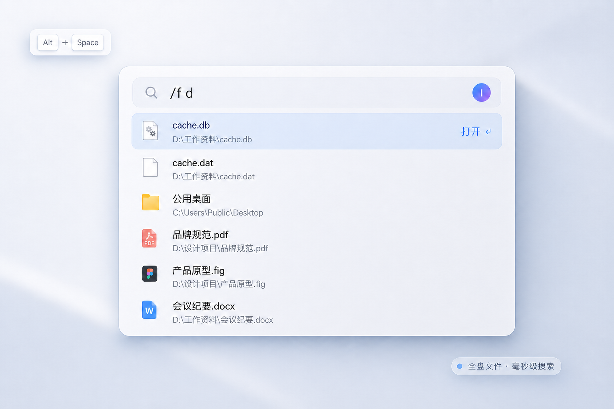

全盘毫秒搜索
快速检索整个电脑里的文件与文件夹。输入关键词，毫秒级呈现匹配结果。
按下 Alt + Space，全盘文件毫秒级呈现；应用、命令和常用工具，也在同一个搜索框里。
✓ 无广告 · 安装即用 · Windows 11
输入 /f 和关键词，iTools 会在全盘文件与文件夹中即时筛选。无需翻目录，想找的结果边输入边出现。
全盘覆盖从系统盘到其他磁盘，文件和文件夹一起找
毫秒级响应输入关键词的同时，搜索结果即时收窄
键盘直达上下选择，按下回车立即打开

无需学习代码。用日常语言告诉 AI 你想要怎样的工具，它会按照 iTools 规范完成创建、调试和验证，直到真正好用。
iTools 不改变你的习惯，只把每一步变得更短。
快速检索整个电脑里的文件与文件夹。输入关键词，毫秒级呈现匹配结果。
不止是搜索。计算、进制转换、时间戳、颜色与网址直达，输入的同时就得到结果。
用插件扩展专属工具，把常用程序加入本地启动，让下一次操作更短、更顺手。
搜索面板只在需要时出现；管理中心把启动项、插件、快捷键和个性设置清楚地放在一起。
全部保存在本地你的启动项和搜索记录不会离开这台电脑。
下载 iTools，按下 Alt + Space，剩下的交给搜索。
可以。iTools 目前面向所有个人用户免费提供下载与使用。
当前正式版面向 Windows 11 64 位系统，并依赖系统自带的 WebView2 运行环境。
iTools 会在后台安静地检查正式版本，发现新版后可在应用内安装。
不会。全盘文件索引、应用搜索、快捷启动和本地工具都在你的电脑上完成。
可以。连接支持 MCP 的 AI 编程助手后，只要描述工具用途，AI 就能按 iTools 规范创建、运行并调试插件。